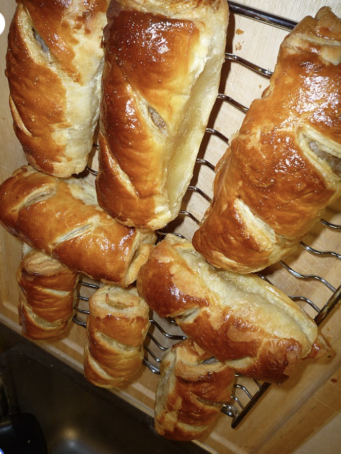
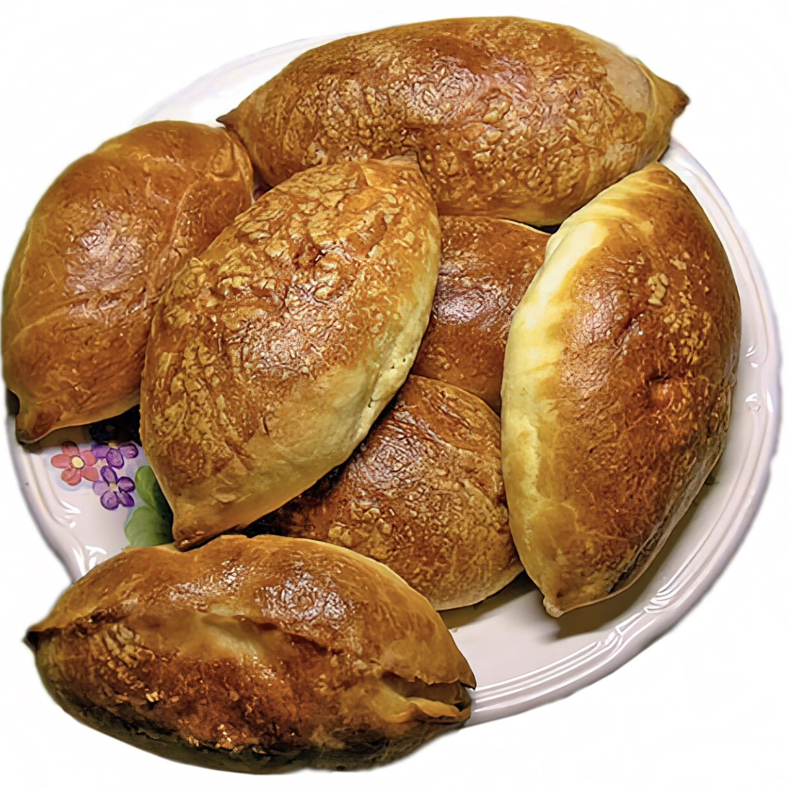

If you like meat, vegetables, and more wrapped into dough, then these salty pastries are for you! This is great for you if you prefer delicous pretzelts or another verison of pretzels.

Sausage rolls consist of ground pork sausage mixed with spices wrapped in flaky pastry.

Pirozhki has a enriched dough but can also be made with flaky pastry or shortcrust dough. There are many flavors that can be used such as ground beef, fish, fruits, jam, boiled eggs and more!